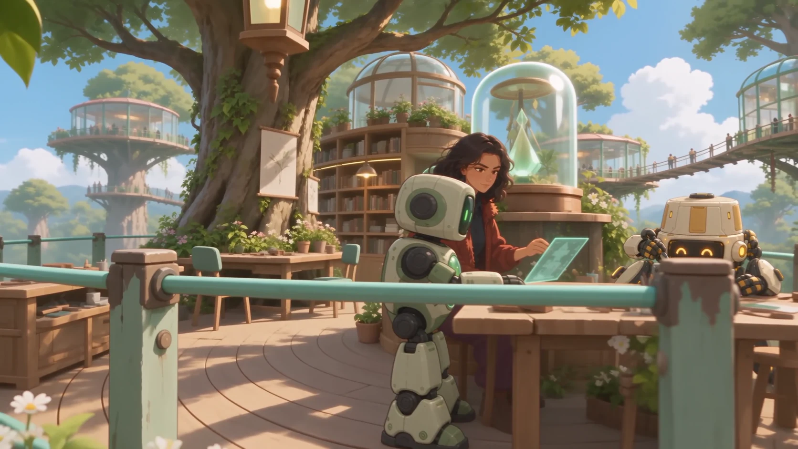
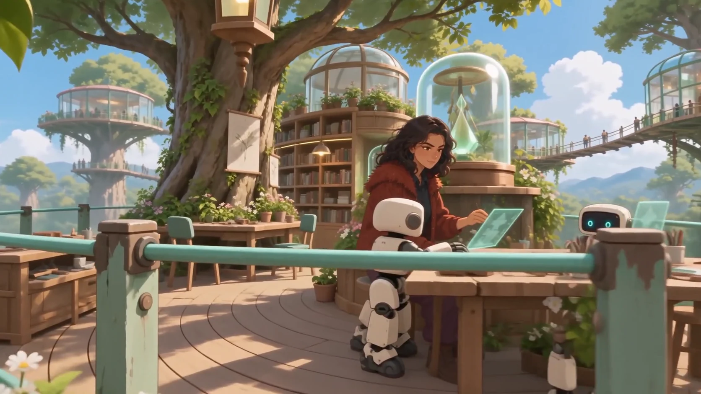

A little help in the lab.
S4-G3 assists Hanna at the holographic screen. H4N-N4 builds at the workbench. This candidate uses the accepted lab animation and the approved robot designs. Hanna approved this clip on October 4, 2026. Homepage integration and production release remain under review.
Accepted differences for this clip: the opening is framed more tightly than the accepted clip. H4N-N4 stands taller than in its character sheet to reach the bench. The table and railing obscure some leg details. The transition briefly shows Hanna in the foreground and again on the distant platform.
Two robots, two roles.

Compare with the accepted scene before the robot edit

Based on your selected original clip. Creative approval applies to this clip; canonical character references remain unchanged. Open the video or open the direction reference.